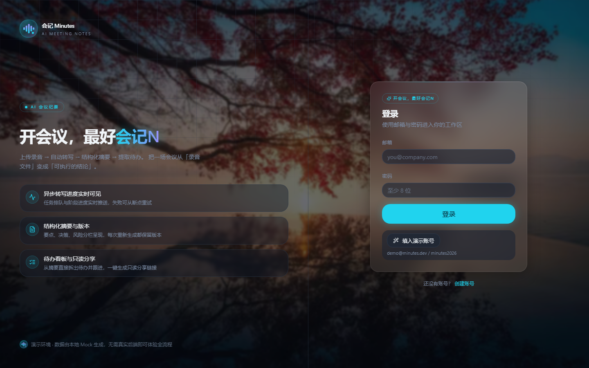
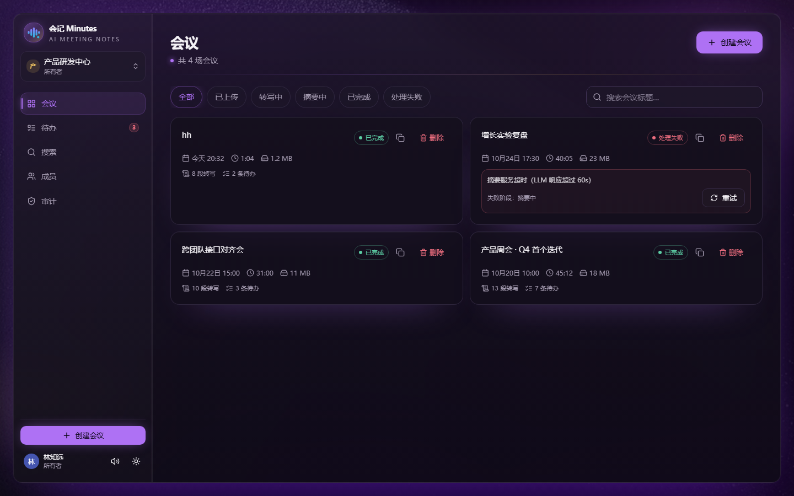
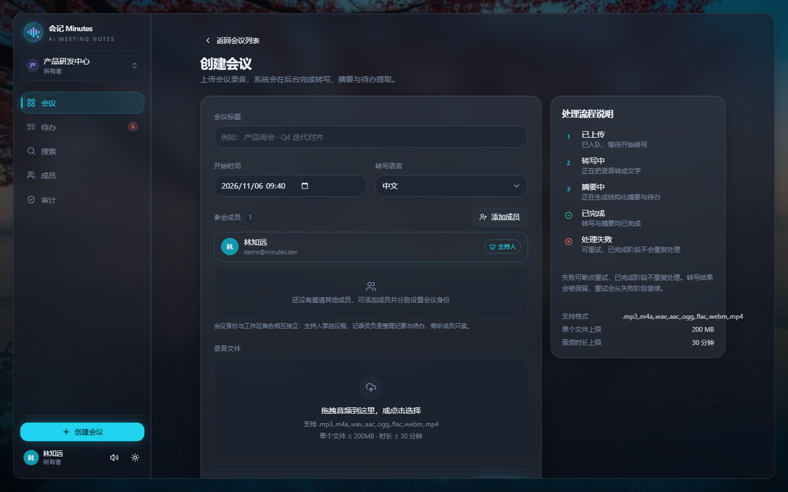
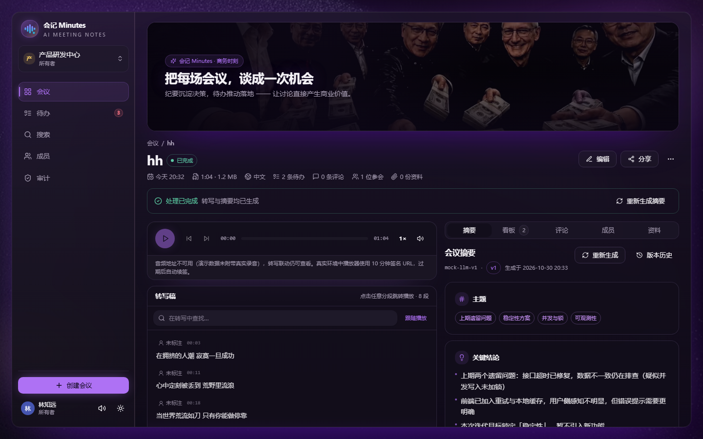
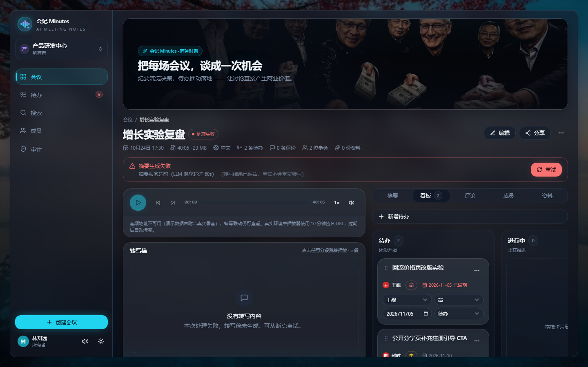
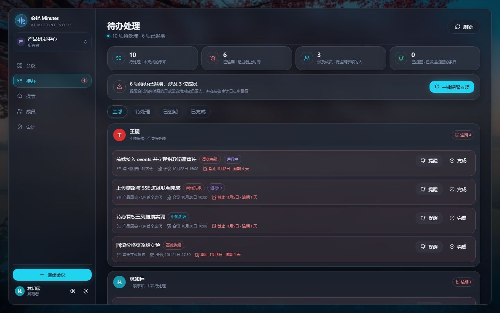
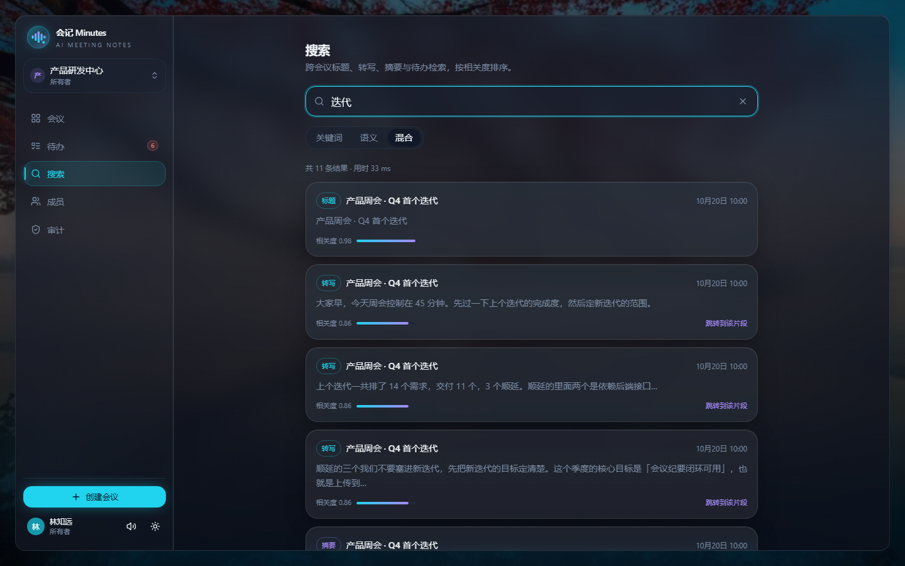
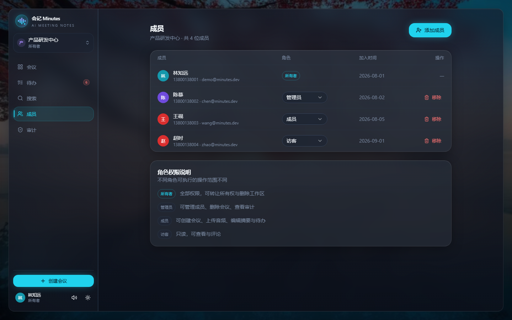
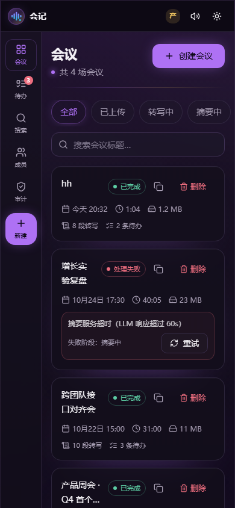

| 提交物 | 内容与位置 |
|---|---|
| 5.1 源代码 | 完整 monorepo 工程（见 5.1 源代码/会记Minutes-源代码.zip，同时提供 Git 仓库）；
根目录 README.md 含项目简介、技术栈、环境配置、启动/运行方法；
依赖清单为 apps/web/package.json 与 apps/api/requirements.txt。 |
| 5.2 项目文档 | 本文件 项目文档06-会记Minutes.pdf，含需求分析、系统设计、开发说明、AI 使用说明、测试报告、小组分工共六章。 |
node_modules / .venv）、构建产物与约 460 MB 的
本地 ASR 模型；恢复方式见 README「四、环境配置 / 五、启动运行」。会议是研发与产品团队最高频的协作场景，但「会而不议、议而不决、决而不行」普遍存在。传统方式存在三类痛点：
与此同时，语音识别（ASR）与大语言模型（LLM）技术在 2025–2026 年已足够成熟：开源 faster-whisper 可在普通 CPU 上离线转写，OpenAI 兼容的大模型接口可稳定输出结构化 JSON。本项目据此构建一条 「上传录音 → 自动转写 → 结构化摘要 → 提取待办 → 看板跟进」的完整闭环，把会议从「录音文件」变成「可执行的结论」。
核心用户为 5–30 人的研发 / 产品团队，尤其是每周固定召开周会、迭代复盘会、跨团队接口对齐会的团队。典型角色画像：
| 角色 | 核心诉求 | 对应功能 |
|---|---|---|
| 会议主持人（Owner / Admin） | 掌控会议结论与待办落地，管理成员与权限 | 创建会议、指定参会身份、待办看板、删除/审计、成员管理 |
| 会议记录员 | 从繁琐记录中解放，只做校正 | 自动转写、分段时间戳、摘要与待办自动生成、人工编辑 |
| 普通参会人（Member） | 明确「我要做什么、什么时候交」 | 跨会议待办聚合、逾期提醒、评论、标记完成 |
| 缺席同事 / 外部相关方（Viewer / 匿名） | 不参会也能快速了解结论 | 只读分享链接（无需登录、可设过期、可撤销） |
按八个功能域整理，共对应后端 49 个 REST/SSE 接口、前端 10 个路由 + 1 个公开分享页。
| 编号 | 功能域 | 功能需求 |
|---|---|---|
| FR-01 | 账号与工作区 | 邮箱注册 / 登录 / 刷新令牌；创建工作区；多工作区切换；当前用户信息。 |
| FR-02 | 会议记录与上传 | 创建会议（标题、时间、语言）；音频拖拽上传（mp3/m4a/wav 等，≤200 MB、≤30 分钟）；格式/大小/时长校验；上传进度与取消；音频替换。 |
| FR-03 | 智能转写 | 异步 ASR 转写；按时间戳分段；点击任意分段跳转音频对应位置（播放器联动）；分段内查找；失败可从断点重试。 |
| FR-04 | 结构化摘要 | AI 生成议题 / 关键结论 / 决策 / 风险 / 待办五个栏目；摘要版本历史、对比与回退、重新生成。 |
| FR-05 | 行动项（待办） | AI 提取待办（负责人 / 截止日期 / 优先级）；三列看板拖拽改状态；手动增删改；按人聚合的跨会议待办页；逾期单条/一键提醒；标记完成。 |
| FR-06 | 团队与权限 | 工作区四角色 RBAC（Owner/Admin/Member/Viewer）；人员库调用与「姓名+手机号」邀请；会议四身份（主持/记录/参会/旁听，与工作区角色解耦）；单一主持人约束。 |
| FR-07 | 会议资料与评论 | 图片/音频/视频/文档上传（单文件 ≤50 MB）、在线预览/下载/删除；会议级与待办级评论。 |
| FR-08 | 搜索 / 分享 / 审计 | 跨会议关键词搜索（标题/转写/摘要/待办，结果高亮、相关度排序、跳转片段）；只读公开分享链接（有效期/撤销）；操作审计日志。 |
| 类别 | 需求与达成方式 |
|---|---|
| 性能 | 普通 CRUD 接口 P95 ≤ 300 ms（不含 AI 处理）；重活（转写/摘要）全部异步化，上传请求立即返回 202 + job_id；前端不轮询，统一 SSE 推送进度。 |
| 可靠性 | 任务队列具备「processing 暂存 + Worker 重启自动回灌 + 3 次重试 + 死信队列」；处理状态只前进、失败保留已完成阶段，支持断点重试；数据写穿 PostgreSQL，重启不丢。 |
| 安全与隐私 | PBKDF2 口令哈希；JWT（access 1h / refresh 30d 旋转）；RBAC 后端强制鉴权；登录失败限流（5 次/5 分钟）；音频/资料存 MinIO 私有桶，仅下发 10 分钟预签名 URL；JWT 密钥缺失或为示例值时拒绝启动。 |
| 易用性 | 所有页面具备 loading / empty / error 三态；暗色商务科技主题；按键音效可关闭；提供演示账号与种子数据；提供双击即用的一键启动脚本。 |
| 兼容性 | 响应式适配桌面与移动端（390/375 px 宽无横向溢出，移动端左侧 68 px 竖向导航）；PWA（manifest + Service Worker + 离线兜底页）；Chrome / Edge 现代浏览器。 |
| 可维护性 | 前后端契约先行（OpenAPI 单一事实源）；统一响应信封与错误码；业务规则集中在领域层，路由只做编排；结构化日志带 request_id。 |
| 可部署性 | Docker Compose 一条命令拉起 6 个服务；同时支持「零依赖纯前端 Mock」「前后端两进程」「Docker 全栈」三种运行形态；未配数据库/Redis/对象存储/AI Key 时逐级降级，行为一致。 |
| 成本可控 | 默认使用本地 faster-whisper 离线转写，零 API 费用；云端 LLM 为可选项，未配置 Key 时回退内置演示模板，不阻塞任何流程。 |
一句话概括：同步接口做 CRUD，异步 Worker 跑 AI，SSE 把进度推回前端。录音上传是重活，不能阻塞 HTTP 请求，因此整体采用「API 进程 + Worker 进程 + 消息队列」的经典异步架构，并为每一个外部依赖设计了降级路径。
处理任务的状态机如下，状态只能前进；失败保留已完成阶段，重试从失败阶段断点续跑、不重复计费：
每一步把 progress（0–100）通过 SSE 推送；同一会议同时只允许一个处理任务，冲突返回 409 STATE_CONFLICT；
用户显式「重新生成摘要」会产生新版本，不破坏旧版本。
| 层 | 选型 | 选型理由 |
|---|---|---|
| 前端框架 | Next.js 15 App Router + React 19 + TS | 路由级代码分割、表单/文件能力完善；App Router 与 PWA、standalone 打包契合；TS 类型与 OpenAPI 契约对齐。 |
| 前端数据/UI | TanStack Query · Radix UI · dnd-kit · Tailwind | Query 统一缓存/重试/失效；Radix 提供无障碍无样式原语；dnd-kit 支撑看板拖拽；Tailwind 用设计 token 统一暗色主题。 |
| 前端 Mock | MSW（Mock Service Worker） | 在浏览器网络层拦截，49 个接口一套内存实现，前端无需等待后端即可开发与演示，且与真实后端同路径切换。 |
| 后端框架 | FastAPI + Pydantic v2 | 异步原生、自动校验、自动生成 OpenAPI 文档，与「契约先行」流程匹配；Python 生态便于接入 whisper 与各类 LLM SDK。 |
| ORM / 迁移 | SQLAlchemy 2 + Alembic | 模型即表结构单一事实源；迁移可离线生成 SQL（alembic upgrade head --sql）供 CI 审阅。 |
| 队列 | Redis List + 独立 Worker（而非重型 Celery） | 需求仅「可靠投递 + 重试 + 死信 + 广播」，用 BLMOVE/processing 两个键即可实现重启不丢，依赖更少、对 4 人团队更易维护；不可用时降级进程内 asyncio。 |
| 数据库 | PostgreSQL 16 + pgvector | 一套库同时承载业务数据、to_tsvector 全文检索（GIN）与向量检索（HNSW），MVP 阶段不必再引入 Elasticsearch。 |
| 对象存储 | MinIO（S3 兼容）私有桶 | 私有桶 + 预签名 URL 保证音频/资料不被匿名访问；本地可用容器版 MinIO，上云无缝换 S3。 |
| AI | faster-whisper（本地）+ OpenAI 兼容 LLM | 转写免费、可离线、CPU int8 可跑，模型随镜像内置；LLM 走标准兼容接口（默认通义 qwen-plus），供应商可替换；两者均提供 mock 降级。 |
| 工程/测试 | Docker Compose · GitHub Actions · Playwright · pytest | 一条命令起全栈；CI 覆盖 pytest、迁移 SQL、typecheck、lint、build、E2E；关键路径用 E2E 兜底。 |
共 14 张业务表，全部 UUID 风格字符串主键（与接口契约一致，不做自增），时间统一存 UTC。 主线关系为：工作区 → 会议 → 转写分段 / 摘要 / 待办 / 资料 / 评论。
| 表 | 关键字段 | 说明 / 约束 |
|---|---|---|
| users | id, email(UK), password_hash, name, phone | 账号；手机号用于人员库与邀请 |
| workspaces | id, name, owner_id, plan | 团队工作区 |
| workspace_members | (workspace_id,user_id) 联合主键, role | 角色 owner/admin/member/viewer |
| meetings | id, workspace_id, created_by, title, status, audio_key, duration_sec, language, started_at, deleted_at | 软删除；status 为状态机核心；对 workspace_id 建索引并带 deleted_at IS NULL |
| meeting_participants | id, meeting_id, user_id, meeting_role | 会议身份 host/recorder/participant/observer；(meeting_id,user_id) 唯一；host 部分唯一索引（一场会一个主持） |
| meeting_attachments | id, meeting_id, uploader_id, kind, file_name, content_type, size_bytes, object_key | image/audio/video/doc；单文件 ≤50MB，服务端校验 |
| transcript_segments | id, meeting_id, seq, start_ms, end_ms, speaker, content | (meeting_id,seq) 唯一，保证 Worker 重跑幂等；speaker 可空（为说话人分离预留） |
| summaries | id, meeting_id, model, version, content(jsonb), status | (meeting_id,version) 唯一；版本化，可对比回退 |
| action_items | id, meeting_id, owner_id, title, status, priority, due_date | 待办；跨会议待办页按 owner 聚合 |
| todo_reminders | id, todo_id(UK), workspace_id, reminded_by, channel | 每个待办仅一条提醒记录，重复提醒返回 409，并写审计 |
| comments | id, target_type, target_id, user_id, content | 多态评论（会议 / 待办） |
| share_links | id, meeting_id, token(UK), scope, expires_at, revoked_at | 只读分享，可设过期与撤销 |
| embeddings | id, meeting_id, source_type, source_id, chunk_text, vector | pgvector，语义检索（HNSW 余弦索引） |
| audit_logs | id, workspace_id, actor_id, action, target, created_at | 成员/会议/分享/提醒等操作审计 |
workspaces 1───* meetings │ ├─* meeting_participants ── users │ ├─* meeting_attachments │ ├─* transcript_segments (seq) │ ├─* summaries (version) │ ├─* action_items ── users(owner) │ │ └─0/1 todo_reminders │ ├─* comments │ └─1/1 share_links └─* workspace_members ── users
to_tsvector('simple', …) + GIN，支撑关键词检索；DATABASE_URL 时由 Repository 启动水合、变更写穿 PostgreSQL；未配置或库不可用时自动回退内存存储（种子数据），单测与本地演示零外部依赖。采用暗紫商务科技主题（深色底 + 青/紫霓虹点缀 + 毛玻璃面板），桌面端为左侧功能栏，移动端（<1024px）
切换为左侧 68 px 竖向导航。以下为实机运行截图（演示账号 demo@minutes.dev）。









工程为前后端同仓的 monorepo，契约（packages/contracts/openapi.yaml）置于最显眼位置，49 个接口先冻结契约，
前端 Mock 与后端实现分别对齐，因此前端关闭 Mock 即可零改动切换真实后端。
| 模块 | 关键文件 | 职责 |
|---|---|---|
| 前端 apps/web | app/（10 路由 + 分享页） | 登录注册、工作区、会议列表/新建/详情、待办、搜索、成员、审计、公开分享。 |
| components/meetings、components/board | 音频播放器与转写联动、摘要面板、看板拖拽、评论、参会成员、资料上传。 | |
| lib/api + lib/hooks | API client、TanStack Query hooks、SSE 事件 Hook（指数退避重连）、类型定义。 | |
| mocks/、e2e/ | MSW 49 接口内存实现（含 SSE/上传/二进制预览）；Playwright 20 条端到端用例。 | |
| 后端 apps/api | app/main.py · http.py · errors.py | 应用入口、/api/v1 挂载、CORS、request_id、统一响应信封与异常转换。 |
| app/security.py · api_utils.py · routers/ | JWT 与口令哈希、鉴权依赖与会议权限守卫；auth/workspaces/meetings/collaboration 四组路由。 | |
| app/pipeline.py · worker.py · queue.py | 处理流水线（转写→摘要→事件）；独立 Worker；Redis 可靠队列与 Pub/Sub 广播。 | |
| app/asr.py · llm.py · docgen.py | 语音识别适配层、LLM 结构化摘要适配层、演示摘要模板生成器。 | |
| app/store.py · repository.py · storage.py | 内存快照与领域规则（权限/聚合/排序/审计）；PostgreSQL 仓储（水合/写穿/降级）；本地与 S3 文件存储。 | |
| 数据与平台 | app/models.py · alembic/ · infra/ · scripts/ | 14 表模型与初始迁移；docker-compose（6 服务）；备份/恢复脚本；CI 工作流。 |
流水线把一次会议处理拆为「转写」「摘要」两个可独立成功/失败的阶段，逐阶段持久化状态与进度。
重试接口接收起始阶段参数，已落库的 transcript_segments 不重跑；(meeting_id, seq) 唯一约束保证 Worker
重放时转写分段幂等。前端通过 SSE 看到 transcribing(2%→70%) → summarizing(70%→100%) → done。
没有直接用「LPUSH/BRPOP」（Worker 崩溃会丢任务），而是用三个键协作：
minutes:jobs # 待执行：LPUSH 入队，Worker 用 BLMOVE 原子领取
minutes:jobs:processing # 执行中：BLMOVE 的目标；崩溃后任务滞留，Worker 重启自动回灌
minutes:jobs:dead # 死信：单任务重试 3 次仍失败，连同错误信息落此列表，保留现场
minutes:events:{mid} # Pub/Sub 频道：Worker 发布进度，API 订阅后转发给浏览器 SSE
minutes:reset:generation # /dev/reset 时代号自增，Worker 每步校验，丢弃跨重置的旧任务领取动作 BLMOVE jobs processing RIGHT LEFT 是原子的，天然避免多 Worker 重复领取；
任务成功后从 processing 删除。未配置 Redis 时整套机制退化为进程内 asyncio，对外行为不变。
难点在于 API 与 Worker 是两个进程：浏览器的 SSE 连在 API 上，而进度产生在 Worker 中。
方案是 Worker 每推进一步都 PUBLISH 到 Redis 频道，API 端的订阅线程收到后用
call_soon_threadsafe 转发进事件循环写入 SSE；同时每 5 s 按数据库真实状态兜底对齐一次，
即使 Pub/Sub 丢事件，刷新页面也能恢复到最新进度。SSE 带 15 s 心跳，前端断线后指数退避重连。
两套角色相互独立：工作区角色（owner/admin/member/viewer）决定「能不能管理工作区、删会议、邀成员、看审计」；
会议身份（host/recorder/participant/observer）只表示在某场会议中的职责。所有判定收敛到统一守卫
（can_write / can_admin / guard_meeting），路由内不允许散落角色 if/else；
「创建者固定主持人且不可移除」「更换主持则原主持自动降级参会人」等规则在服务端与数据库唯一索引两层保证，权限矩阵全部进自动化测试。
系统对四类外部依赖都设计了「有则用、无则降」的路径，使同一份代码在「单机演示」与「Docker 全栈」下行为一致：
| 依赖 | 完整模式 | 降级模式 |
|---|---|---|
| 数据库 | 启动从 PostgreSQL 水合到内存快照；写请求成功后 0.4s 内写回（写穿）；进程退出前强制落库 | 未配 DATABASE_URL → 纯内存 + 种子数据，重启恢复 |
| 队列 | Redis 队列 + 独立 Worker + processing 回灌 | 未配 REDIS_URL → 进程内 asyncio 串行执行 |
| 对象存储 | MinIO 私有桶 + 10 分钟预签名 URL | 未配 S3 → 落本地 storage/ 并由 API 流式返回 |
| AI | 本地 faster-whisper 转写；配 LLM_API_KEY 用云端大模型摘要 | ASR 可切 mock；LLM 未配 Key → 内置演示模板 mock-llm-v1 |
直接对 30 分钟音频单进程转写延迟过高。适配层（app/asr.py）用 faster-whisper 的 VAD 按静音把长音频
切成约 300 s 的块，通过 ProcessPoolExecutor 按物理核数并行推理（CPU int8），再按时间偏移合并分段并保持
seq 连续；模型内置在镜像/安装包中（约 460 MB），运行时不联网下载。另实现了阿里云极速版适配与 HMAC 签名/Token 缓存，
通过 ASR_PROVIDER 一个环境变量切换，业务代码无感知。
用系统提示词强约束大模型「只输出一个 JSON 对象」，字段固定为 topics / key_points / decisions / risks / action_items（待办含 owner、due_date，且 owner 只能取自转写中出现过的人名）。返回后经 JSON 解析与结构校验： 非法则重试一次，仍失败则会议停在 summarizing 阶段、保留转写稿并允许原地重试，绝不产生半截脏数据； HTTP 超时默认 90 s，失败文案明确展示给用户（如图 2-5「LLM 响应超过 60s」）。
MINUTES_JWT_SECRET 缺失/过短/为示例值时应用直接拒绝启动；Idempotency-Key，弱网重试不产生重复会议。| 问题 | 现象 / 原因 | 解决方案 |
|---|---|---|
| API 与 Worker 分进程后 SSE 收不到进度 | SSE 连接在 API 进程，处理在 Worker 进程，内存订阅者互相不可见 | 引入 Redis Pub/Sub：Worker 发布、API 订阅线程转发，并加 5 s 按库兜底；跨线程写入用 call_soon_threadsafe。 |
| Worker 重启导致处理中任务丢失 | 普通 BRPOP 在任务弹出后、完成前崩溃，任务既不在队列也无记录 | BLMOVE 原子转入 processing 列表；启动时把 processing 中任务回灌重新执行；3 次失败进死信，实测 docker stop/start 可续跑。 |
| 没有免费可商用的「说话人分离」API | diarization 本质是声纹聚类算法，免费 API 极少 | MVP 降级：speaker 字段允许为空、前端可手动标注；ASR 适配层预留 diarize 参数，后续接 FunASR/WhisperX 不改业务代码；分离失败只降级不致整场失败。 |
| 大模型偶发返回非合法 JSON | 模型夹带解释文字或 Markdown 代码块，摘要无法落库 | 系统提示词强约束 + JSON 解析/结构校验 + 失败重试一次 + 仍失败则保留转写并停在摘要阶段供人工重试，杜绝脏数据。 |
| 460 MB 语音模型分发困难、首次运行要联网 | 评测/演示机房经常无外网，HuggingFace 下载还会因 Xet 协议报 401 | 模型直接 COPY 进 Docker 镜像、内置进免安装启动包；并支持 HF_ENDPOINT 镜像站与 HF_HUB_DISABLE_XET 兜底。 |
| Docker Hub 拉取 minio 镜像超时/被拒 | 默认源超时，部分国内镜像站对 minio 返回 denied | 在 daemon.json 配置 registry-mirrors，minio 系列使用可用镜像源，并在文档中固化这一经验。 |
| Mock 数据与真实后端容易漂移 | 前端一套种子、后端一套种子，字段逐渐不一致 | 规定种子只能由同一个 build_seed() 生成，seed_db.py 同源入库，保证 Mock / 内存库 / PostgreSQL 三处数据完全一致。 |
| 长音频 CPU 转写慢 | 30 分钟单进程 int8 推理等待时间长 | VAD 静音检测切块（切点落在句间静音）+ ProcessPoolExecutor 多进程并行 + 时间偏移合并，充分利用多核。 |
开发全程主要使用 Trae AI 编程助手 进行结对编程：在 IDE 内以自然语言对话方式生成与修改代码、 解释报错、编写测试、生成正则/SQL/CSS 与技术文档初稿；并借助其对整个代码库的检索能力做跨文件重构。 接口与报错查证辅以搜索引擎与官方文档。所有 AI 产出均经人工审核、运行调试与自动化测试验证后方才合入。
页面与组件样板代码、TanStack Query hooks、看板拖拽与上传交互、Tailwind 样式与暗色主题 token、表单校验、PWA 配置、Playwright 用例骨架。
Pydantic 模型与 CRUD 路由样板、pytest 用例、阿里云 NLS 签名代码、统一响应/异常处理、Alembic 模型与索引定义、结构化日志。
Dockerfile 与 compose 编排片段、备份脚本、CI 工作流、README 与本项目文档初稿。
总体架构与状态机设计、Redis 可靠队列方案、RBAC 权限模型、安全收口策略、ASR/LLM 系统提示词、降级方案、最终代码审查与验收。
useMeetingEvents(meetingId) Hook：用 EventSource 连接
/meetings/{id}/events，监听 progress/done/error 事件更新状态和进度百分比，组件卸载时关闭连接。」lib/hooks/use-meeting-events.ts。
app/queue.py。
| 项 | 配置 |
|---|---|
| 硬件 / 系统 | Windows 11 本机；Docker Desktop 4.97（全栈验证） |
| 软件版本 | Node.js 20+、Python 3.11、PostgreSQL 16（pgvector 镜像）、Redis 7、MinIO latest、Chromium（Playwright） |
| 测试层次 | ① 后端 pytest + httpx（接口/权限/流水线）；② 前端 Playwright E2E（真实用户路径）；③ tsc --noEmit 类型检查；④ CI 离线校验迁移 SQL |
| 被测形态 | 前端在「MSW Mock」「真实 FastAPI 后端」「Docker 容器化全栈」三种形态下分别跑过 E2E |
| # | 用例 | 结果 |
|---|---|---|
| 1 | 健康检查 GET /health 返回正常信封 | 通过 |
| 2 | 注册/登录 → /me 与工作区列表正确 | 通过 |
| 3 | 登录失败统一错误码；refresh 可换取新令牌且旧令牌旋转 | 通过 |
| 4 | 会议列表筛选与聚合详情（摘要/待办/权限）一致 | 通过 |
| 5 | 工作区成员添加、改角色、移除及人员库规则 | 通过 |
| 6 | 创建带参会成员的会议，流水线完整推进到 done | 通过 |
| 7 | 会议资料上传（≤50MB）/ 下载 / 删除链路 | 通过 |
| 8 | 跨会议待办聚合、逾期天数计算与提醒（重复提醒 409） | 通过 |
| 9 | 关键词搜索与分享链接创建/撤销、公开访问校验 | 通过 |
| 10 | 权限矩阵：越权 403、软删除后 404、创建者不可移除 | 通过 |
| 11 | 同一邮箱连续 5 次密码错误后返回 429 限流 | 通过 |
| 12 | /dev/reset 默认关闭（404） | 通过 |
| 13 | JWT 密钥缺失/过短/示例值时拒绝启动 | 通过 |
| # | 用例 | 所属文件 | 结果 |
|---|---|---|---|
| 1–2 | 登录后进入列表且卡片状态徽标正确；未登录访问被重定向到登录页 | 01-auth | 2/2 通过 |
| 3 | 点击转写分段驱动音频播放器跳转到对应时间 | 02-player | 通过 |
| 4 | 失败会议可从摘要阶段断点重试并推进到完成（SSE） | 03-retry-sse | 通过 |
| 5 | 看板拖拽卡片跨列更改待办状态 | 04-board | 通过 |
| 6 | 上传音频后进入处理流程，状态可推进到完成 | 05-upload | 通过 |
| 7–8 | 公开分享页只读且无应用导航；失效 token 给出明确空态 | 06-share | 2/2 通过 |
| 9 | 移动端 390×844 列表与详情无横向溢出、左侧导航可用 | 07-mobile | 通过 |
| 10–12 | 搜索有关键词结果并可跳转详情；成员页隐藏越权入口；审计页展示记录 | 08-search | 3/3 通过 |
| 13–14 | 创建会议时添加成员并分别设置身份；详情页增删成员、改身份并共享资料 | 09-members-files | 2/2 通过 |
| 15–16 | 待办按人展示、逾期可提醒并标记完成；移动端可进入待办页无溢出 | 10-todos | 2/2 通过 |
| 17–18 | 人员库调用成员（姓名+手机号）加入并移除；无效手机号被拦截 | 11-members | 2/2 通过 |
| 19–20 | 管理员删除会议后列表移除且直链返回不存在；访客看不到删除入口 | 12-delete | 2/2 通过 |
| 验证项 | 结果 |
|---|---|
| Docker Compose 全栈启动 | 通过 postgres / redis / minio（自动建私有桶）/ api / worker / web 全部 Up，依赖服务 healthy |
| 数据库迁移 | 通过 alembic upgrade head 实跑：15 张表、vector 扩展、GIN/HNSW/部分唯一索引齐全 |
| 种子入库 | 通过 6 用户 / 2 工作区 / 3 会议 / 28 转写分段 / 3 摘要 / 12 待办 / 4 资料 / 5 审计 |
| 持久化 | 通过 建会议并处理完成后 restart api，详情/摘要/转写/参会人仍在 |
| 队列可靠性 | 通过 处理中 stop/start worker 任务自动回灌并跑完；坏任务重试 3 次后进死信列表 |
| 对象存储安全 | 通过 资料入私有桶、返回 10 分钟预签名 URL、匿名访问 403、删除同步清对象 |
| 备份恢复 | 通过 pg_dump 备份 → 临时库恢复，表数与行数一致，随后销毁临时库 |
| 真实语音识别 | 通过 免安装包内上传音频，faster-whisper 离线转写出正确中文文本 |
| 测试类型 | 用例数 | 通过 | 失败 / 阻塞 | 结论 |
|---|---|---|---|---|
| 后端 pytest | 13 | 13 | 0 | 全部通过 |
| 前端 Playwright E2E（Mock） | 20 | 20 | 0 | 全部通过 |
| 前端 E2E（真实后端） | 20 | 20 | 0 | 全部通过 |
| TypeScript 类型检查 | — | tsc --noEmit 0 错误 | 0 | 通过 |
| 生产构建 | — | next build 成功（standalone） | 0 | 通过 |
LLM_API_KEY 时摘要走内置演示模板（mock-llm-v1），转写为真实识别结果；/ready 探针与 CI，Prometheus 指标告警、CD 与 staging/prod 分级待补；小组共 4 人，原则是每个人都写代码、每个人都有可独立验收的交付物。分工精确到模块与功能点如下。
交付：10 个路由 + 公开分享页的完整前端，20 条 Playwright E2E。具体功能点：
use-meeting-events Hook、指数退避断线重连、进度条与失败重试交互；交付：49 个接口的 FastAPI 后端与 13 条 pytest。具体功能点：
交付：14 表数据库、一条命令起全栈的平台工程与备份恢复。具体功能点：
schema.sql、枚举/外键/软删除/唯一约束；build_seed() 及 seed_db.py 入库脚本；/ready 依赖探针；交付：PRD/契约/测试/演示与一个前后端垂直切片。具体功能点：
| 任务 | 参与人 / 完成标志 |
|---|---|
| OpenAPI 契约冻结 | 郭顺主责，马佰川、许佳骏评审；核心接口与错误码齐全，Mock Server 可跑 |
| 每周集成 | 全员；主分支始终可启动、主链路可演示 |
| 代码评审 | 全员；每个 PR 至少 1 人 review、CI 通过后合并 |
| 安全与隐私检查 | 郭顺 / 尹元康 / 许佳骏；签名 URL、权限矩阵、删除链路、密钥收口全部通过 |